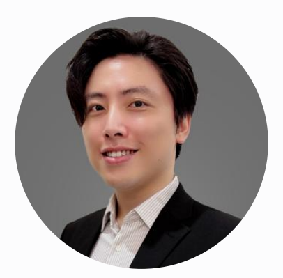
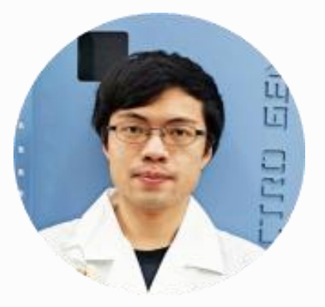
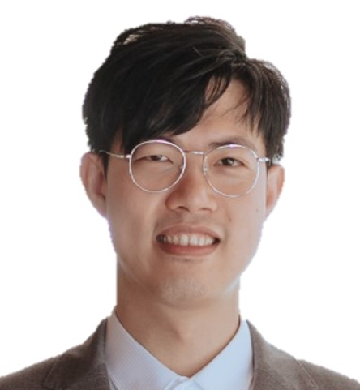

關於永環材料
我們的願景是成為全球領先的「低碳材料供應夥伴」，以創新的綠色循環技術，
將工業廢料轉化為高價值的再生材料，真正實現循環經濟的理想。
我們的核心理念
環境永續
我們深信，工業發展與環境保護可以並行不悖。我們的技術核心目標就是工業減碳，每噸再生金屬能有效降低 40%-80% 的碳排放。選擇永環，就是選擇對地球更友善的未來。
技術創新
創新是我們的DNA。獨家的「創新合金循環技術」，將傳統複雜的工序大幅簡化，實現碳排放減量。這不僅是製程的簡化，更是對效率與環保永續的重新定義。
協助綠色轉型
我們致力於以永續理念促進產業升級。藉由永環的創新服務技術，我們提供客製化高品質產品與服務水準，促進客戶滿意度與市場競爭力。
專業、熱情、使命必達的團隊
我們的團隊由材料科學、資源循環、商業營運等領域的專家組成，共同致力於以科技解決方案應對全球性的環境挑戰。

鄭梓民 博士
創辦人 & 執行長 (CEO)專精於廢棄物資源化與材料科學技術，是永環材料核心技術的發明者，擁有豐富的新型循環技術研發與商業化經驗。

羅韶奇 博士
技術長 (CTO)材料分析與低碳製程開發的專家，專長電化學技術應用與第一原理材料模擬，確保我們的技術始終保持在世界領先水平。

黃渤珽
營運長 (COO)擅長產品設計與跨部門營運整合，負責將創新技術轉化為穩定可靠的商業服務，確保技術與市場需求的完美契合。